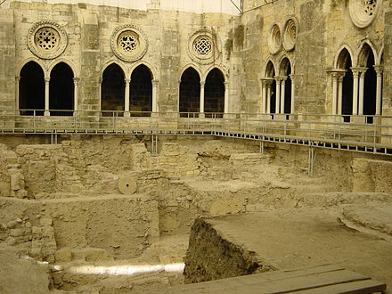
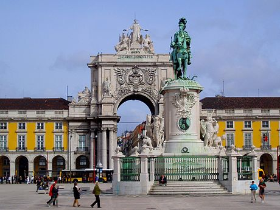

WELCOME TO THE CITY OF LISBON
History
Pre-Roman
During the Neolithic period, the region was inhabited by Pre-Celtic tribes, who built religious and funerary monuments, megaliths, dolmens and menhirs, which still survive in areas on the periphery of Lisbon. The Indo-European Celts invaded in the 1st millennium BC, mixing with the Pre-Indo-European population, thus giving rise to Celtic-speaking local tribes such as the Cempsi.

Phoenician archaeological dig in the Lisbon Cathedral cloisters
Although the first fortifications on Lisbon's Castelo hill are known to be no older than the 2nd century BC, recent archaeological finds have shown that iron age people occupied the site from the 8th to 6th centuries BC. This indigenous settlement maintained commercial relations with the Phoenicians, which would account for the recent findings of Phoenician pottery and other material objects. The sheltered harbour in the Tagus River estuary was an ideal spot for an Iberian settlement and would have provided a secure harbour for unloading and provisioning Phoenician ships. The Tagus settlement was an important centre of commercial trade with the inland tribes, providing an outlet for the valuable metals, salt and salted-fish they collected, and for the sale of the Lusitanian horses renowned in antiquity.
Roman Era
Following the defeat of Hannibal during the Punic wars, the Romans determined to deprive Carthage of its most valuable possession: Hispania (the Iberian Peninsula). The defeat of Carthaginian forces by Scipio Africanus in Eastern Hispania allowed the pacification of the west, led by Consul Decimus Junius Brutus Callaicus. Local authorities were granted self-rule over a territory that extended 50 kilometres (31 mi); exempt from taxes, its citizens were given the privileges of Roman citizenship, and it was then integrated with the Roman province of Lusitania (whose capital was Emerita Augusta).

Section of the Cerca Velha (Old Wall) of Visigothic origin.
Lusitanian raids and rebellions during Roman occupation necessitated the construction of a wall around the settlement. During Augustus' reign, the Romans also built a great theatre; the Cassian Baths (underneath Rua da Prata); temples to Jupiter, Diana, Cybele, Tethys and Idea Phrygiae (an uncommon cult from Asia Minor), in addition to temples to the Emperor; a large necropolis under Praça da Figueira; a large forum and other buildings such as insulae (multi-storied apartment buildings) in the area between the Castle Hill and the historic city core.
Olissipo, like most great cities in the Western Empire, was a centre for the dissemination of Christianity. Its first attested Bishop was Potamius (c. 356), and there were several martyrs during the period of persecution of the Christians: Maxima, Verissimus and Eulalia of Mérida are the most significant examples. By the time of the Fall of Rome, Olissipo had become a notable Christian centre. Following the disintegration of the Roman Empire there were barbarian invasions; between 409 and 429 the city was occupied successively by Sarmatians, Alans and Vandals. The Germanic Suebi, who established a kingdom in Gallaecia (modern Galicia and northern Portugal), with its capital in Bracara Augusta, also controlled the region of Lisbon until 585. In 585, the Suebi Kingdom was integrated into the Germanic Visigothic Kingdom of Toledo, which comprised all of the Iberian Peninsula: Lisbon was then called Ulishbona.
Middle Ages
On 6 August 711, Lisbon was taken by Muslim forces. These conquerors, who were mostly Berbers and Arabs from North Africa and the Middle East, built many mosques and houses, rebuilt the city wall (known as the Cerca Moura) and established administrative control, while permitting the diverse population (Muladi, Mozarabs, Berbers, Arabs, Jews, Zanj and Saqaliba) to maintain their socio-cultural lifestyles. Mozarabic was the native language spoken by most of the Christian population. Islam was the official religion practised by the Arabs, Berbers, Zanj, Saqaliba and Muladi (muwalladun); the Christians were allowed to keep their religion under the status as Dhimmi subjects, and were allowed rights of residence in return for jizyah taxes. In return for paying this extra tax, Christians and Jews were excluded from specific duties assigned to Muslims like joining the Islamic army, and their security was guaranteed by the state, but otherwise, the Christians and Jews were equal to Muslims under the laws of property, contract and obligation.The Muslim influence is still visible present in the Alfama district, an old quarter of Lisbon that survived the 1755 Lisbon earthquake: many place-names are derived from Arabic and the Alfama (the oldest existing district of Lisbon) was derived from the Arabic "al-hamma".For a brief time, Lisbon was the central town in the Regulo Eslavo of the Taifa of Badajoz, and then as an independent Taifa, as the Taifa of Lisbon. During the last centuries of the Middle Ages, the city expanded substantially and became an important trading post with both Northern European and Mediterranean cities.
Late modern and contemporary
In the first years of the 19th century, Portugal was invaded by the troops of Napoléon Bonaparte, forcing Queen Maria I and Prince-Regent John (future John VI) to flee temporarily to Brazil. By the time the new King returned to Lisbon, many of the buildings and properties were pillaged, sacked or destroyed by the invaders.During the 19th century, the Liberal movement introduced new changes into the urban landscape. The principal areas were in the Baixa and along the Chiado district, where shops, tobacconists shops, cafés, bookstores, clubs and theatres proliferated. The development of industry and commerce determined the growth of the city, seeing the transformation of the Passeio Público, a Pombaline era park, into the Avenida da Liberdade, as the city grew farther from the Tagus.

Rua Augusta Arch, Downtown Lisbon